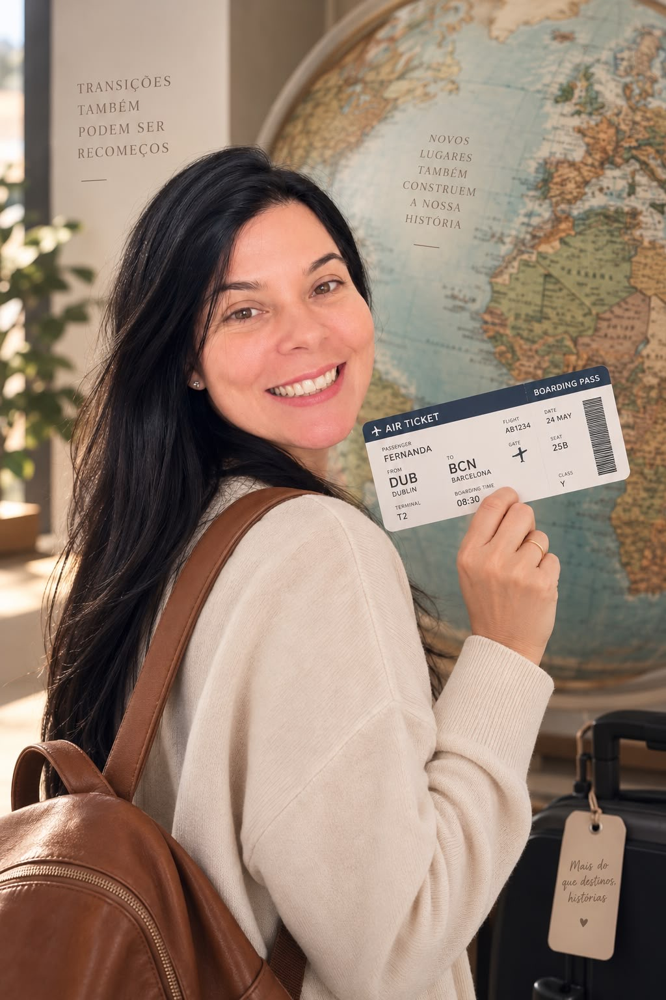

Aceitação
Olhar com honestidade para o que é, sem se perder de si.
Psicanálise integrativa
Um espaço de escuta, reflexão e direcionamento para pessoas que vivem transições de vida — no exterior ou em qualquer fase de recomeço.
100% online
de onde você estiver
Horários flexíveis
no seu fuso horário
Primeira sessão
sem custo

Sobre mim
Sou psicanalista integrativa e acompanho pessoas em processos de autoconhecimento, transformação e ressignificação.
Minha vivência como imigrante há 10 anos na Europa me deu um olhar sensível e real sobre os desafios, perdas e recomeços que fazem parte de uma vida em transição.
Hoje, uno minha experiência de vida à escuta clínica para ajudar pessoas a compreenderem sua história, ampliarem a consciência sobre si mesmas e construírem uma vida mais alinhada com quem realmente são.
“Ser é muito diferente de fazer.”
Uma abordagem integrativa
Aceitação • Decisão • Ação
Uma metodologia que te ajuda a elaborar o que você vive, reconhecer suas escolhas e construir movimentos possíveis, com mais clareza, responsabilidade emocional e ação.
Olhar com honestidade para o que é, sem se perder de si.
Reconhecer o que faz sentido e assumir suas escolhas.
Construir passos possíveis em direção a uma vida mais autêntica.
Transições de vida
Morar fora pode ser uma grande oportunidade, mas também traz desafios emocionais profundos.
Aqui, você encontra um espaço para falar sobre o que realmente importa: identidade, pertencimento, relações, escolhas e tudo o que envolve se sentir em casa longe de casa — ou em qualquer transição de vida.
Como funciona a terapia
100% online
de onde você estiver
Horários flexíveis
no seu fuso horário
Primeira sessão
sem custo
O que dizem
“
A terapia com a Fernanda me ajudou a olhar para a minha história com mais clareza e a fazer escolhas que realmente fazem sentido para mim.
Mariana
Portugal
“
Me senti acolhida, sem julgamentos, e finalmente consegui me conectar com o que realmente quero para a minha vida.
Camila
Itália
“
O processo me trouxe mais leveza e direção em um momento de muitas dúvidas. Recomendo de coração.
Ana
Brasil
Dê o primeiro passo para uma vida mais alinhada com quem você é.
Você pode recomeçar quantas vezes precisar.